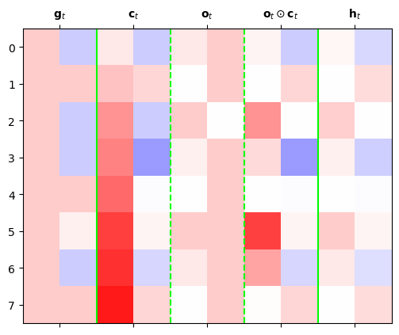
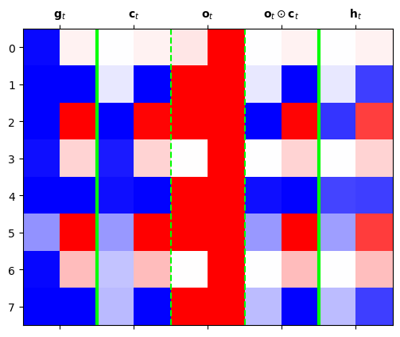

import torch
import pandas as pd
import matplotlib.pyplot as plt13wk-1: 순환신경망 (4)
1. 강의영상
2. Import
soft = torch.nn.Softmax(dim=1)
sig = torch.nn.Sigmoid()
tanh = torch.nn.Tanh()3. Data – abcabC
txt = list('abcabC')*50
txt[:10]['a', 'b', 'c', 'a', 'b', 'C', 'a', 'b', 'c', 'a']df_train = pd.DataFrame({'x':txt[:-1], 'y':txt[1:]})
df_train[:5]| x | y | |
|---|---|---|
| 0 | a | b |
| 1 | b | c |
| 2 | c | a |
| 3 | a | b |
| 4 | b | C |
x = torch.tensor(df_train.x.map({'a':0,'b':1,'c':2,'C':3}))
y = torch.tensor(df_train.y.map({'a':0,'b':1,'c':2,'C':3}))
X = torch.nn.functional.one_hot(x).float()
y = torch.nn.functional.one_hot(y).float()4. LSTM의 계산과정 재현
A. torch.nn.LSTMCell
torch.manual_seed(43052)
lstmcell = torch.nn.LSTMCell(4,2)
cook = torch.nn.Linear(2,4)
loss_fn = torch.nn.CrossEntropyLoss()
optimizr = torch.optim.Adam(list(lstmcell.parameters())+list(cook.parameters()),lr=0.1)L = len(x)
for epoc in range(1):
ht = torch.zeros(2)
ct = torch.zeros(2)
loss = 0
## 1~2
for t in range(L):
Xt,yt = X[t], y[t]
ht,ct = lstmcell(Xt,(ht,ct))
ot = cook(ht)
loss = loss + loss_fn(ot,yt)
loss = loss / L
## 3
loss.backward()
## 4
optimizr.step()
optimizr.zero_grad()ht,ct (tensor([0.0533, 0.2075], grad_fn=<SqueezeBackward1>),
tensor([0.1218, 0.5590], grad_fn=<SqueezeBackward1>))B. 직접구현
t=0 \(\to\) t=1
- lstmcell을 이용하여 \(t=0 \to t=1\)을 구현해보자. (결과비교용)
torch.manual_seed(43052)
lstmcell = torch.nn.LSTMCell(4,2)
cook = torch.nn.Linear(2,4)
#--#
loss_fn = torch.nn.CrossEntropyLoss()
optimizr = torch.optim.Adam(list(lstmcell.parameters())+list(cook.parameters()),lr=0.1)
#--#
L = len(X)
for epoc in range(1):
# step1~2
ht,ct = torch.zeros(2),torch.zeros(2)
loss = 0
for t in range(1):
Xt,yt = X[t],y[t]
ht,ct = lstmcell(Xt,(ht,ct))
netout_t = cook(ht) # 원래는 ot 로 썼는데, 여기서는 기호가 겹쳐서..
loss = loss + loss_fn(netout_t,yt)
loss = loss/L
# step3
loss.backward()
# step4
optimizr.step()
optimizr.zero_grad()ht,ct(tensor([0.1067, 0.1069], grad_fn=<SqueezeBackward1>),
tensor([0.1734, 0.2688], grad_fn=<SqueezeBackward1>))- 이런결과를 어떻게 만드는걸까?
- https://pytorch.org/docs/stable/generated/torch.nn.LSTM.html
- 직접계산 (ifgo)
torch.manual_seed(0)
lstmcell = torch.nn.LSTMCell(4,2)print(lstmcell.weight_ih.T)
print(lstmcell.bias_ih)tensor([[-0.0053, -0.2723, -0.0628, -0.6755, 0.2795, 0.2568, -0.1140, -0.4452],
[ 0.3793, 0.1896, 0.1871, -0.4683, 0.4243, 0.5872, 0.0748, -0.1790],
[-0.5820, -0.0140, -0.2137, -0.2915, -0.4794, -0.1455, 0.6403, -0.2756],
[-0.5204, 0.5607, -0.1390, 0.0262, -0.3079, 0.5291, -0.6560, 0.6109]],
grad_fn=<PermuteBackward0>)
Parameter containing:
tensor([-0.3136, -0.0255, 0.4522, 0.7030, 0.2806, 0.0955, 0.4741, -0.4163],
requires_grad=True)print(lstmcell.weight_hh.T)
print(lstmcell.bias_hh)tensor([[-0.4583, -0.4940, -0.4128, 0.3155, 0.0372, 0.1196, -0.5109, 0.4461],
[-0.3255, -0.6622, 0.6078, 0.3427, -0.3625, -0.6602, -0.3645, 0.4146]],
grad_fn=<PermuteBackward0>)
Parameter containing:
tensor([ 0.1318, -0.5482, -0.4901, -0.3653, 0.3199, 0.2844, -0.4189, 0.2136],
requires_grad=True)Wih02 = lstmcell.weight_ih.T[:,0:2] # (4,2)
Wih24 = lstmcell.weight_ih.T[:,2:4] # (4,2)
Wih46 = lstmcell.weight_ih.T[:,4:6] # (4,2)
Wih68 = lstmcell.weight_ih.T[:,6:8] # (4,2)
#--#
Whh02 = lstmcell.weight_hh.T[:,0:2] # (2,2)
Whh24 = lstmcell.weight_hh.T[:,2:4] # (2,2)
Whh46 = lstmcell.weight_hh.T[:,4:6] # (2,2)
Whh68 = lstmcell.weight_hh.T[:,6:8] # (2,2)
#--#
bih02 = lstmcell.bias_ih[0:2]
bih24 = lstmcell.bias_ih[2:4]
bih46 = lstmcell.bias_ih[4:6]
bih68 = lstmcell.bias_ih[6:8]
#--#
bhh02 = lstmcell.bias_hh[0:2]
bhh24 = lstmcell.bias_hh[2:4]
bhh46 = lstmcell.bias_hh[4:6]
bhh68 = lstmcell.bias_hh[6:8] ht = torch.zeros(2)
ct = torch.zeros(2)
#--#
it = sig((Xt@Wih02 + bih02) + (ht@Whh02 + bhh02))
ft = sig((Xt@Wih24 + bih24) + (ht@Whh24 + bhh24))
gt = tanh((Xt@Wih46 + bih46) + (ht@Whh46 + bhh46))
ot = sig((Xt@Wih68 + bih68) + (ht@Whh68 + bhh68))it,ft,gt,ot(tensor([0.4534, 0.3003], grad_fn=<SigmoidBackward0>),
tensor([0.4749, 0.4163], grad_fn=<SigmoidBackward0>),
tensor([0.7065, 0.5627], grad_fn=<TanhBackward0>),
tensor([0.4853, 0.3435], grad_fn=<SigmoidBackward0>))그런데 아래와 같이 계산할수도 있음.
i = (Xt@Wih02 + bih02) + (ht@Whh02 + bhh02)
f = (Xt@Wih24 + bih24) + (ht@Whh24 + bhh24)
g = (Xt@Wih46 + bih46) + (ht@Whh46 + bhh46)
o = (Xt@Wih68 + bih68) + (ht@Whh68 + bhh68)torch.concat([i,f,g,o],axis=0)tensor([-0.1871, -0.8461, -0.1006, -0.3379, 0.8801, 0.6367, -0.0587, -0.6479],
grad_fn=<CatBackward0>)ifgo = Xt@ lstmcell.weight_ih.T + lstmcell.bias_ih + ht@ lstmcell.weight_hh.T + lstmcell.bias_hh
ifgotensor([-0.1871, -0.8461, -0.1006, -0.3379, 0.8801, 0.6367, -0.0587, -0.6479],
grad_fn=<AddBackward0>)sig(ifgo[0:2]), sig(ifgo[2:4]), tanh(ifgo[4:6]), sig(ifgo[6:8])(tensor([0.4534, 0.3003], grad_fn=<SigmoidBackward0>),
tensor([0.4749, 0.4163], grad_fn=<SigmoidBackward0>),
tensor([0.7065, 0.5627], grad_fn=<TanhBackward0>),
tensor([0.4853, 0.3435], grad_fn=<SigmoidBackward0>))- 직접계산 (ch)
ht = torch.zeros(2)
ct = torch.zeros(2)ct = it*gt + ft*ct
ht = ot*tanh(ct)ht,ct(tensor([0.1503, 0.0575], grad_fn=<MulBackward0>),
tensor([0.3203, 0.1689], grad_fn=<AddBackward0>))# t=0 \(\to\) t=L
- lstmcell을 이용하여 구현해보자. (결과비교용)
torch.manual_seed(43052)
lstmcell = torch.nn.LSTMCell(4,2)
cook = torch.nn.Linear(2,4)
#--#
loss_fn = torch.nn.CrossEntropyLoss()
optimizr = torch.optim.Adam(list(lstmcell.parameters())+list(cook.parameters()),lr=0.1)
#--#
L = len(X)
for epoc in range(1):
# step1~2
ht,ct = torch.zeros(2),torch.zeros(2)
loss = 0
for t in range(L):
Xt,yt = X[t],y[t]
ht,ct = lstmcell(Xt,(ht,ct))
netout_t = cook(ht)
loss = loss + loss_fn(netout_t,yt)
loss = loss/L
# step3
loss.backward()
# step4
optimizr.step()
optimizr.zero_grad()ht,ct(tensor([0.0533, 0.2075], grad_fn=<SqueezeBackward1>),
tensor([0.1218, 0.5590], grad_fn=<SqueezeBackward1>))- 직접구현
torch.manual_seed(43052)
lstmcell = torch.nn.LSTMCell(4,2)
cook = torch.nn.Linear(2,4)
#--#
loss_fn = torch.nn.CrossEntropyLoss()
optimizr = torch.optim.Adam(list(lstmcell.parameters())+list(cook.parameters()),lr=0.1)
#--#
L = len(X)
for epoc in range(1):
# step1~2
ht,ct = torch.zeros(2),torch.zeros(2)
loss = 0
for t in range(L):
Xt,yt = X[t],y[t]
ifgo = Xt@lstmcell.weight_ih.T + lstmcell.bias_ih +\
ht@lstmcell.weight_hh.T + lstmcell.bias_hh
it,ft,gt,ot = sig(ifgo[0:2]), sig(ifgo[2:4]), tanh(ifgo[4:6]), sig(ifgo[6:8])
ct = it*gt + ft*ct
ht = ot*tanh(ct)
netout_t = cook(ht)
loss = loss + loss_fn(netout_t,yt)
loss = loss/L
# step3
loss.backward()
# step4
optimizr.step()
optimizr.zero_grad()ht,ct(tensor([0.0533, 0.2075], grad_fn=<MulBackward0>),
tensor([0.1218, 0.5590], grad_fn=<AddBackward0>))C. torch.nn.LSTM
torch.manual_seed(43052)
lstmcell = torch.nn.LSTMCell(4,2)
cook = torch.nn.Linear(2,4) lstm = torch.nn.LSTM(4,2) lstm.weight_hh_l0.data = lstmcell.weight_hh.data
lstm.bias_hh_l0.data = lstmcell.bias_hh.data
lstm.weight_ih_l0.data = lstmcell.weight_ih.data
lstm.bias_ih_l0.data = lstmcell.bias_ih.data loss_fn = torch.nn.CrossEntropyLoss()
optimizr = torch.optim.Adam(list(lstm.parameters()) + list(cook.parameters()), lr=0.1) Water = torch.zeros(1,2)
for epoc in range(1):
## step1
h, (ht,ct) = lstm(X,(Water,Water))
netout = cook(h)
## step2
loss = loss_fn(netout,y)
## step3
loss.backward()
## step4
optimizr.step()
optimizr.zero_grad() ht,ct(tensor([[0.0533, 0.2075]], grad_fn=<SqueezeBackward1>),
tensor([[0.1218, 0.5590]], grad_fn=<SqueezeBackward1>))5. LSTM은 왜 강한가?
A. 적합 및 시각화
- 적합
torch.manual_seed(43052)
lstm = torch.nn.LSTM(4,2)
cook = torch.nn.Linear(2,4)
loss_fn = torch.nn.CrossEntropyLoss()
optimizr = torch.optim.Adam(list(lstm.parameters())+ list(cook.parameters()),lr=0.1)
#--#
Water = torch.zeros(1,2)
for epoc in range(200):
## step1
h, (ht,ct) = lstm(X,(Water,Water))
netout = cook(h)
## step2
loss = loss_fn(netout,y)
## step3
loss.backward()
## step4
optimizr.step()
optimizr.zero_grad() - 시각화
L = len(X)
i = input_gate = torch.zeros(L,2)
f = forget_gate = torch.zeros(L,2)
g = gihhen_state = torch.zeros(L,2)
o = output_gate = torch.zeros(L,2)
c = cell_state = torch.zeros(L,2)
h = hidden_state = torch.zeros(L,2)
#--#
water = torch.zeros(2)
ifgo = X[0] @ lstm.weight_ih_l0.T + water @ lstm.weight_hh_l0.T + lstm.bias_ih_l0 + lstm.bias_hh_l0
i[0] = sig(ifgo[0:2])
f[0] = sig(ifgo[2:4])
g[0] = tanh(ifgo[4:6])
o[0] = sig(ifgo[6:8])
c[0] = f[0] * water + i[0] * g[0]
h[0] = o[0] * tanh(c[0])
#--#
for t in range(1,L):
## 1: calculate _ifgo
ifgo = X[t] @ lstm.weight_ih_l0.T + h[t-1] @ lstm.weight_hh_l0.T + lstm.bias_ih_l0 + lstm.bias_hh_l0
## 2: decompose _ifgo
i[t] = sig(ifgo[0:2])
f[t] = sig(ifgo[2:4])
g[t] = tanh(ifgo[4:6])
o[t] = sig(ifgo[6:8])
## 3: calculate ht,ct
c[t] = f[t] * c[t-1] + i[t] * g[t]
h[t] = o[t] * tanh(c[t])mat = torch.concat([g,h,soft(netout)],axis=1)[:8].data
plt.matshow(mat,cmap='bwr',vmin=-1,vmax=1);
plt.axvline(x=3.5,color="lime")
plt.xticks(
ticks=range(mat.shape[-1]),
labels=[r"$g_0$",r"$g_1$",r"$h_0$",r"$h_1$",
r"$P_a$",r"$P_b$",r"$P_c$",r"$P_C$"]
)
plt.colorbar()
B. 시각화1: \(({\boldsymbol g}_t, {\boldsymbol c}_{t-1}) \to {\boldsymbol c}_{t}\)
mat1 = torch.concat([g[1:9],i[1:9],g[1:9]*i[1:9]],axis=1).data
mat2 = torch.concat([c[:8],f[1:9],c[:8]*f[1:9]],axis=1).data
mat3 = torch.concat([g[1:9]*i[1:9],c[:8]*f[1:9],c[1:9]],axis=1).datac[:8].min(),c[:8].max()(tensor(-1.0900, grad_fn=<MinBackward1>),
tensor(0.9979, grad_fn=<MaxBackward1>))fig,ax = plt.subplots(1,3,figsize=(10,10))
ax[0].matshow(mat1,cmap='bwr',vmin=-1,vmax=1);
ax[0].axvline(x=1.5,linestyle="dashed",color="lime")
ax[0].axvline(x=3.5,linestyle="dashed",color="lime")
ax[0].set_xticks(ticks= [0.5,2.5,4.5],labels=[r'${\bf g}_t$',r'${\bf i}_t$',r'${\bf g}_t \odot {\bf i}_t$']);
ax[1].matshow(mat2,cmap='bwr',vmin=-1,vmax=1);
ax[1].axvline(x=1.5,linestyle="dashed",color="lime")
ax[1].axvline(x=3.5,linestyle="dashed",color="lime")
ax[1].set_xticks(ticks= [0.5,2.5,4.5],labels=[r'${\bf c}_{t-1}$',r'${\bf f}_t$',r'${\bf c}_{t-1} \odot {\bf f}_t$']);
ax[2].matshow(mat3,cmap='bwr',vmin=-1,vmax=1);
ax[2].axvline(x=1.5,linestyle="dashed",color="lime")
ax[2].axvline(x=3.5,linestyle="dashed",color="lime")
ax[2].set_xticks(ticks= [0.5,2.5,4.5],labels=[r'${\bf g}_t \odot {\bf i}_t$',r'${\bf c}_{t-1} \odot {\bf f}_t$',r'${\bf c}_t$']);
fig.tight_layout()
- \({\boldsymbol g}_t\) 특징: 보통 -1,1 중 하나의 값을 가지도록 학습되어 있다. (마치 RNN의 hidden node처럼!)
- \(\boldsymbol{g}_t = \tanh({\boldsymbol x}_t {\bf W}_{ig} + {\boldsymbol h}_{t-1} {\bf W}_{hg}+ {\boldsymbol b}_{ig}+{\boldsymbol b}_{hg})\)
- \({\boldsymbol c}_t\) 특징: \({\boldsymbol g}_t\)와 매우 비슷하지만 약간 다른값을 가진다. 그래서 \({\boldsymbol g}_t\)와는 달리 -1,1 이외의 값도 종종 등장.
- \({\boldsymbol c}_t\)의 값은 이론상 제한이 없음. (꼭 -1,1 사이에 있지 않음)
C. 시각화2: \({\boldsymbol g}_t \to {\boldsymbol h}_{t}\)
mat = torch.concat([g[:8],c[:8],o[:8],c[:8]*o[:8],h[:8]],axis=1).dataplt.matshow(mat.data,cmap='bwr',vmin=-1,vmax=1)
plt.xticks([0.5,2.5,4.5,6.5,8.5],[r'${\bf g}_t$',r'${\bf c}_t$',r'${\bf o}_t$',r'${\bf o}_t \odot {\bf c}_t$',r'${\bf h}_t$']);
plt.axvline(x=1.5,color="lime",linewidth=3)
plt.axvline(x=3.5,linestyle="dashed",color="lime")
plt.axvline(x=5.5,linestyle="dashed",color="lime")
plt.axvline(x=7.5,color="lime",linewidth=3)
- \({\boldsymbol h}_t\) 특징: (1) \({\boldsymbol c}_t\)에서 원하는 것만 선택적으로 특징으로 삼은 느낌. (2) \(c_t\)보다 훨씬 값을 다양하게 가진다. (\(\odot\) 의 효과 )
D. LSTM의 알고리즘 리뷰 I (수식위주)
(step1) calculate \({\tt ifgo}\)
\({\tt ifgo} = {\boldsymbol x}_t \big[{\bf W}_{ii} | {\bf W}_{if}| {\bf W}_{ig} |{\bf W}_{io}\big] + {\boldsymbol h}_{t-1} \big[ {\bf W}_{hi}|{\bf W}_{hf} |{\bf W}_{hg} | {\bf W}_{ho} \big] + bias\)
\(=\big[{\boldsymbol x}_t{\bf W}_{ii} + {\boldsymbol h}_{t-1}{\bf W}_{hi} ~\big|~ {\boldsymbol x}_t{\bf W}_{if}+ {\boldsymbol h}_{t-1}{\bf W}_{hf}~ \big|~ {\boldsymbol x}_t{\bf W}_{ig} + {\boldsymbol h}_{t-1}{\bf W}_{hg} ~\big|~ {\boldsymbol x}_t{\bf W}_{io} + {\boldsymbol h}_{t-1}{\bf W}_{ho} \big] + bias\)
참고: 위의 수식은 아래코드에 해당하는 부분
ifgo = Xt @ lstm_cell.weight_ih.T +\
ht @ lstm_cell.weight_hh.T +\
lstm_cell.bias_ih + lstm_cell.bias_hh(step2) decompose \({\tt ifgo}\) and get \({\boldsymbol i}_t\), \({\boldsymbol f}_t\), \({\boldsymbol g}_t\), \({\boldsymbol o}_t\)
\({\boldsymbol i}_t = \sigma({\boldsymbol x}_t {\bf W}_{ii} + {\boldsymbol h}_{t-1} {\bf W}_{hi} +bias )\)
\({\boldsymbol f}_t = \sigma({\boldsymbol x}_t {\bf W}_{if} + {\boldsymbol h}_{t-1} {\bf W}_{hf} +bias )\)
\({\boldsymbol g}_t = \tanh({\boldsymbol x}_t {\bf W}_{ig} + {\boldsymbol h}_{t-1} {\bf W}_{hg} +bias )\)
\({\boldsymbol o}_t = \sigma({\boldsymbol x}_t {\bf W}_{io} + {\boldsymbol h}_{t-1} {\bf W}_{ho} +bias )\)
(step3) calculate \({\boldsymbol c}_t\) and \({\boldsymbol h}_t\)
\({\boldsymbol c}_t = {\boldsymbol i}_t \odot {\boldsymbol g}_t+ {\boldsymbol f}_t \odot {\boldsymbol c}_{t-1}\)
\({\boldsymbol h}_t = \tanh({\boldsymbol o}_t \odot {\boldsymbol c}_t)\)
E. LSTM의 알고리즘 리뷰 II (느낌위주)
- 이해 및 암기를 돕기위해서 비유적으로 설명한 챕터입니다..
- 느낌: RNN이 콩물에서 간장을 한번에 숙성시키는 방법이라면 LSTM은 콩물에서 간장을 단계를 나누어 숙성하는 느낌이다.
- RNN: \({\boldsymbol x}_t \overset{{\boldsymbol h}_{t-1}}{\longrightarrow} {\boldsymbol h}_t\)
- LSTM: \({\boldsymbol x}_t \overset{{\boldsymbol h}_{t-1}}{\longrightarrow} {\boldsymbol g}_t \overset{{\boldsymbol c}_{t-1}}{\longrightarrow} \Big({\boldsymbol c}_t \to {\boldsymbol h}_t \Big)\)
- \({\boldsymbol g}_t\)에 대하여
- 과거와 현재의 결합 (선형변환): \({\boldsymbol x}_t\)와 \({\boldsymbol h}_{t-1}\)를 \({\bf W}_{ig}, {\bf W}_{hg}\)를 이용해 선형결합
- 숙성(비선형변환): \(\tanh\)
- 느낌: RNN에서 간장을 만들던 그 수식에서 \(h_t\)를 \(g_t\)로 바꾼것 그래서 RNN의 간장과 비슷하다고 생각하면 된다.
- 노트: RNN의 간장은 한계를 가지고 있는데 그 한계를 극복하기 위해 만든 것이 \({\boldsymbol c}_t\)
- \({\boldsymbol c}_t\)에 대하여
- 과거와 현재의 결합 (선형변환): \({\boldsymbol g}_{t}\)와 \({\boldsymbol c}_{t-1}\)를 요소별로 선택하고 더하는 과정
- 숙성 (비선형변환): 없음.
- 느낌: 과거와 현재의 정보중 유리한것만 기억하여 선택적으로 결합함. 이때 결합방식에 대한 노하우는 \({\tt input-gate}\), \({\tt forget-gate}\) 에 있으며 그러한 결합의 결과가 \({\boldsymbol c}_t\)에 있음. 이 \({\boldsymbol c}_t\)에 대한 정보는 그대로 “냉동보관(?)”되어 다음세대로 내려옴.
- 비고: \({\boldsymbol c}_t\)는 사실상 LSTM 알고리즘의 꽃이라 할 수 있음. LSTM은 long short term memory의 약자임. 기존의 RNN은 장기기억을 활용함에 약점이 있는데 LSTM은 단기기억/장기기억 모두 잘 활용함. LSTM이 장기기억을 잘 활용하는 비법은 바로 \({\boldsymbol c}_t\)에 있다.
- \({\boldsymbol h}_t\)에 대하여
- 과거와 현재의 결합 (선형변환): 없음
- 숙성 (비선형변환): \(\tanh({\boldsymbol c}_t)\)를 요소별로 선택하여 숙성
RNN은 기억할 과거정보가 \({\boldsymbol h}_{t-1}\) 하나이지만 LSTM은 \({\boldsymbol c}_{t-1}\), \({\boldsymbol h}_{t-1}\) 2개이다.
F. LSTM이 강한이유
- 답변1: LSTM이 장기기억에 유리함. 그 이유는 input, forget, output gate 들이 장기기억을 위한 역할을 하기 때문.
- 비판: 아키텍처에 대한 이론적 근거는 없음. 장기기억을 위하여 꼭 LSTM같은 구조일 필요는 없음. (게이트는 꼭3개이어야 하는지?)
- 답변2: 아키텍처상으로 LSTM은 RNN을 포함함. 그래서 이론적으로 LSTM의 성능이 RNN보다 떨어질 이유는 없음.
- 답변3: 저는 사실 아까 살펴본 아래의 이유로 이해하고 있습니다.
- 실험적으로 살펴보니 LSTM이 RNN보다 장기기억에 유리했음.
- 그 이유: RNN은 \({\boldsymbol h}_t\)의 값이 -1 혹은 1로 결정되는 경우가 많았음. 그러나 경우에 따라서는 \({\boldsymbol h}_t\)이 -1~1의 값을 가지는 것이 문맥적 뉘앙스를 포착하기에는 유리한데 LSTM이 이러한 방식으로 학습되는 경우가 많았음.
- 왜 LSTM의 \({\boldsymbol h}_t\)은 -1,1 이외의 값을 쉽게 가질 수 있는가? \(\odot\) 때문에.. 즉 게이트때문에..
6. Ref
- 참고자료들